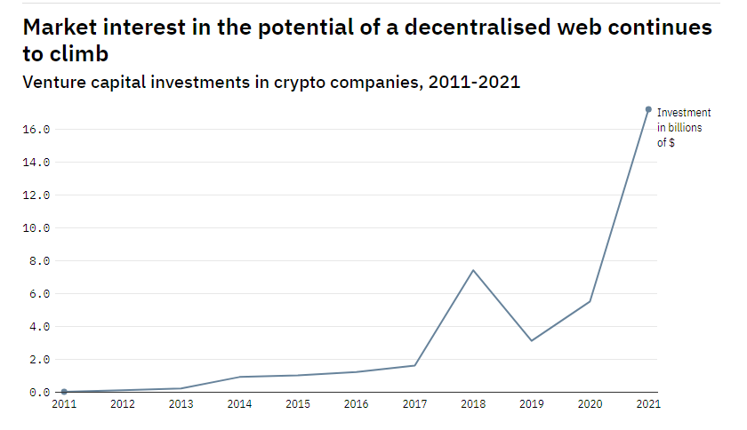

The Bright Future of Web 3.0?
From personal data pods to the 'spatial web', ideas are forming for the next stage in the evolution of the worldwide web.
By Greg Noone
What will Web 3.0 look like? When considering the future of the worldwide web, it feels natural to consult its inventor. Interviewed in 2005, Tim Berners-Lee looked back on his creation with pride, and hoped that the trajectory of its evolution would continue to be informed by its original, decentralised architecture. “I feel like the web should be something which basically doesn’t try to coerce people in doing, putting, particular sorts of things on it – that it’s open, like a sheet of white paper,” Berners-Lee said. “The problems of bad information out there are… problems, I think, with humanity.” The solution to these was what he called the ‘semantic web.’ Instead of rooting around a shaky network of hyperlinks to find what they were looking for, users would be able to rely on a system that could find the relevant information intuitively. Within a year, a new term was coined: Web 3.0, marking the web’s evolution beyond the 1.0 era of HTML web pages and early e-commerce into the gaudier 2.0 period, which saw the birth of social media and ‘user-generated content’.
Web 2.0 vs Web 3.0
Nowadays, people rarely talk about the semantic web, perhaps because its ambitions have largely been realised. This is thanks in large part to the ability of search engines to tag and file millions of websites using dedicated crawlers. “Search works much better because Google has all that information,” explains Jim Hendler, a professor at Rensselaer Polytechnic Institute and an early collaborator with Berners-Lee. “It’s able to index it and do all the magic they can do to keep it working. But at the same time, that means if you want to look for something, you have to go to a search engine that’s done that collecting and trust it.” But this isn’t exactly the web that its creator wants. In Berners-Lee’s opinion, much of the success of the Google’s and Facebook’s of the internet rested on their amassing of the personal data of billions of ordinary consumers, over which the latter possessed no meaningful say in how it was used. And so, together with collaborators at the start-up Inrupt, the inventor of the web now proposes to remake his creation with a new platform that allows users to take back control in the future. Known as ‘Solid,’ it affords consumers the ability to secure all the information about themselves online into ‘personal online data stores,’ or pods – and force websites and public institutions to ask them for access.
What does Web 3.0 look like?
Berners-Lee is not alone in thinking that the future of the web lies in decentralisation. Neither is his the only vision for how that would work. The term has also become a rallying cry for those experimenting with ‘Web 3.0’ projects such as cryptocurrencies, DAOs and decentralised finance (DeFi). They envisage the next iteration of the web as a more transparent, freedom-loving space where an individual’s data and speech will be immune from tampering and indelible, underwritten by thousands of Blockchain ledgers. Meanwhile, a third vision for Web 3.0 sees digital information liberated from our smartphones and laptops and embedded into the environment around us. This so-called ‘spatial web’ will see virtual and augmented reality integrate with our daily lives. Although they encapsulate different values and objectives, these three visions may all come to pass, overlapping and interacting. Because, however, the use of information on the internet evolves, the notion of a singular web with finite boundaries is already dead.

Web 3.0: A decentralised web of personal data
The new Berners-Lee vision of Web 3.0 stems from concerns over personal data protection. It presumes that users are disturbed by the accumulation of their data by Facebook, Google and Amazon and will embrace a model that puts them in control. Solid is designed to do just that, giving all requests for personal data from websites, companies or state institutions to an individual’s data vault, or ‘Pod,’ for authentication. Models like Solid, says Hendler, might help to create a whole new market for data brokerage. He points to digital advertising, in which companies pay website operators to target ads to users based on their online behaviour and other data. “Money is exchanged between them and I don’t get any of it,” says Hendler. If personal data were under the control of the user, data brokers might pay them fractional fees for access. Opportunities also lie in improving aspects of healthcare like dementia treatment, with Solid’s architects arguing that pods could contain not only medical records, but information on personal preferences and routines that help to keep patients grounded.
Trials of Solid’s software on the NHS began late last year, with a similar pilot project underway at NatWest and the regional government of Flanders. Not that the enterprise has been immune from criticism. While Solid is intended to eventually act as its own development platform for whole new applications, some have questioned whether the model would actually live up to its promise of economic advantage for consumers. ‘The fundamental flaw of such a system is that data is of little value when it is bought and sold on its own,’ recently argued media expert Dr Pieter Verdegem. “The value of data only emerges from its aggregation and analysis, accrued via network effects.”
Solid also bears an eerie resemblance to another technology that makes similar promises about privacy, security and a decentralised future for the web. “Blockchain and Solid are different,” said Berners-Lee at last year’s Web Summit: while advocates envision multiple, indelible ledgers recording all kinds of data across the internet for the world to see, the latter concentrates on securing personal or institutional data inside individual private vaults.
In that sense, the Berners-Lee vision for Web 3.0 isn’t all that different from Web 1.0: a place where users can reap the benefits of the free and instantaneous exchange of information, without the need to reveal too much of their private data – albeit now with the software to enforce that rule.
Is Web 3.0 good for free speech?
Devotees of blockchain, meanwhile, imagine a much more disrupted web in the future, with the technology affording economic transformation in cryptocurrencies and NFTs, and the basic organisation of society in the flowering of distributed autonomous organisations (DAOs.) What’s more, supporters argue that its popularisation will restore free speech on the internet to its original, uncensored form – with the added failsafe that, on a blockchain network, it is (theoretically) impossible to delete information undetected.
Some of the impetus for this vision of a decentralised web is socio-political. “What I think is pushing this generation of the decentralised web forwards is, probably, the re-emergence of more libertarian views that were quite popular in the 90s” in the tech community, explains Dr Edina Harbinja of Aston University.
Is Web 3.0 already here?
Some facets of the decentralised web are beginning to be adopted by the mainstream, most notably in the form of NFTs. However, that doesn’t apply to key aspects of this ‘Web 3.0’ vision – most notably in the issue of free speech on the internet. After all, things have changed since the early days of the web. Society has become less idealistic about uncensored publication and more familiar with the challenges social networks face in moderating hate speech, misinformation and illegal content. So far, decentralisation has only seemed to revive these problems: decentralised social media platform Mastodon decried the migration of far-right Gab users to its servers but was unable to stop them.
Meanwhile governments, many of whom are seeking to increase regulation of the digital sphere, are unlikely to tolerate a truly decentralised web. “Wearing rose-tinted glasses, I could see [it] protecting diversity of thoughts and opinions and reduc[ing] the risk of monitoring, tracking and targeting of at-risk or marginalised individuals or groups,” says Australia’s eSafety Commissioner Julie Inman-Grant, a responsibility that she acknowledges search and social media giants have failed to live up to. Nevertheless, the lack of in-built mechanisms for centralised authority in decentralised apps means that moderating illegal and harmful content is extremely difficult. “If no one is responsible or accountable, how does one remediate potential harm?”
As such, both Inman-Grant and Harbinja find it difficult to imagine a purely decentralised web that national authorities can readily accept, at least without stronger in-built protections that prevent the spread of criminal and extremist content. That might be different in emerging markets, however, where state authority is weaker and where support for decentralised innovations such as blockchain and cryptocurrencies is much stronger. “We’ve seen that with Web 2.0, in the Arab Spring and the use of social media,” says Harbinja. Even so, this effect alone is unlikely to lead to a global embrace of such technologies, she believes.
State resistance isn’t the only obstacle to the decentralised web. It is hard to see how the likes of Facebook or Google would willingly bend to such a model, at least not without significant market pressure. There are decentralised versions of their popular offerings, including video sharing sites and online word processors, but their performance is often found to be lacking.

The spatial web
There is another vision for the future of the web – one that’s concerned less with philosophical
principles in how we use the web than the evolution of the practicalities of access. In the
so-called ‘Spatial Web,’ our interactions with the internet will be defined by how we interact with
it through physical surfaces and filters – essentially, the apotheosis of the ‘internet of things’
of connected devices embedded in our homes, cars, offices and cities.
“You’d wake up in the morning, and you could [look out] your window, and it will automatically be
telling you about the weather,” explains Dr Allan V Cook, managing director and Digital Reality
Business leader at Deloitte Digital – the kind of world where news headlines pop up on bathroom
mirrors and meetings are conducted in virtual reality.
Indeed, workable versions of this technology are already with us, albeit expensive products usually
found in corporate design workshops. Even so, says Cook, prices are coming down, with VR and AR
devices becoming readily affordable for the ordinary consumer. The tipping point for more widespread
adoption, he says, is the creation of useful content for these platforms. But there are signs that
the market is receptive – one being the popularity of video filters.
“Snap filters, where I can put a unicorn horn on my forehead, or I can change my hair green, [is]
fun,” says Cook. “But then it becomes a tool where you start to say, ‘Hey, there’s actually utility
behind this’,” a way to trial a new shade of lipstick or hair dye, or how a piece of furniture might
look in a living room.
This vision for Web 3.0 is not entirely incompatible with parallel ambitions for a decentralised
internet. Blockchain, for example, can play a useful (if not all-encompassing) role in ledgering and
automating contractual agreements, while edge computing will be necessary in handling the huge AR
and VR files. Crucially, though, this vision doesn’t really break the model of companies controlling
personal data, and governments regulating its uses. Indeed, in some ways, it pushes it even further.
Not only will the Spatial Web hunger for more data on users' locations and online interactions, but
in some cases monitor sweat responses, eye movements, even facial expressions. “These technologies
will know us better than we know ourselves,” says Cook.
He acknowledges this will bring its own problems. A world where brand interaction moves off screens
and into smart glasses is bound to result in abuses: hackers daubing e-graffiti over landmarks
perhaps, or sinister, deepfake-based X-Ray spec applications. Depressingly, all this is to be
expected – but is Web 3.0 the best way to describe it?
Probably not, says Cook. The same goes for any vision of a decentralised internet, argues Hendler
and Harbinja. When the term ‘Web 3.0’ was tentatively coined in 2006, there was a clear line between
the web of hypertext pages encountered on computer screens and the infrastructure of the internet
that made it all possible. That now seems almost impossible given how much of humanity now lives
their lives online, through a plethora of devices. Indeed, the web, for all intents and purposes,
may be dead. Whatever comes next will need a new name.